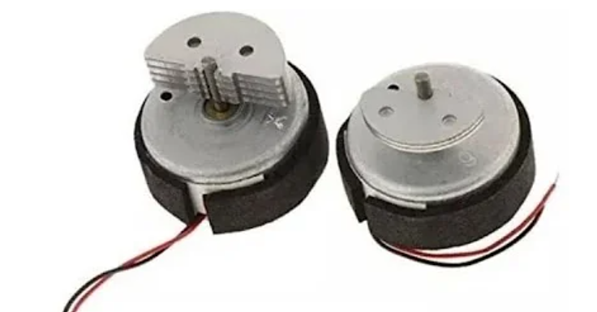

Este motor na época era inovador, já que na antiga versão do controle, Sixaxis, não havia esta função. Esta pequena peça fez muita diferença, tornando a gameplay dos jogadores muito mais imersiva, em relação à antiga. Hoje em dia, esta tecnologia pode não ser surpreendente, mas na época era algo totalmente novo. A gente escolheu esta peça, não somente por conta da sua função curiosa, mas também por sua história, que este controle surgiu após uma luta muito longa na justiça. A Sony resolveu um processo de violação de patente com a Immersion em março de 2007, após uma longa batalha legal. O acordo abriu o caminho para incorporar o recurso de "rumble", que faltava no Sixaxis. Rumble Pak é um acessório que produz vibrações, acoplado no controle do console, fazendo com que, em certos jogos, haja um tremor do controle em resposta a estímulos do jogo, como levar um tiro ou cair no chão.
